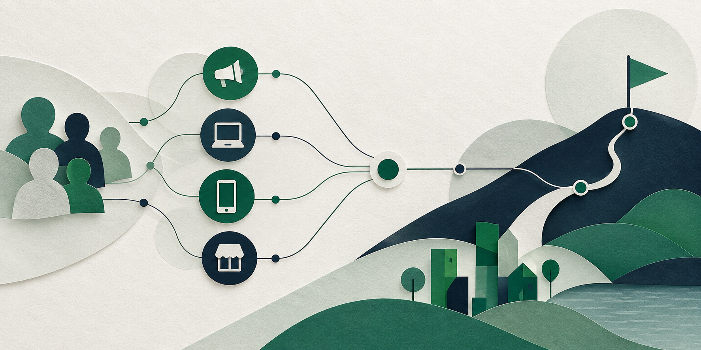

Seu plano está pronto
Uma direção para o próximo movimento.
O plano reúne objetivo, audiência, canais e recomendações iniciais.

Plano: Campanha de verão · Cliente: {{ cliente }}
Créditos12utilizados no plano
ReferênciaR$ 968,00 por crédito
Equivalente1 diade planejamento